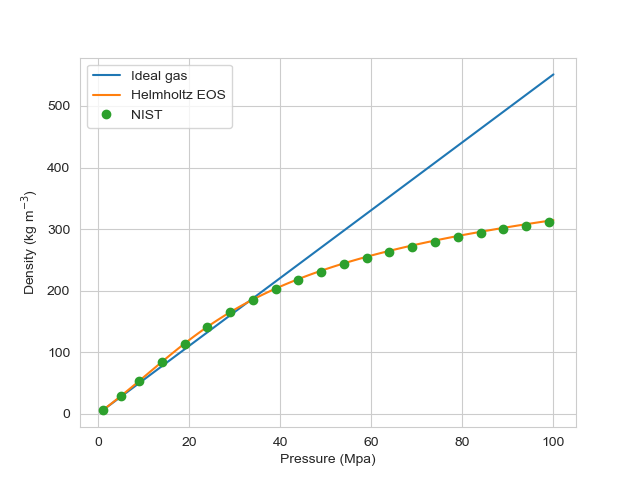

- execute_onTIMESTEP_ENDThe list of flag(s) indicating when this object should be executed, the available options include NONE, INITIAL, LINEAR, NONLINEAR, TIMESTEP_END, TIMESTEP_BEGIN, MULTIAPP_FIXED_POINT_END, MULTIAPP_FIXED_POINT_BEGIN, FINAL, CUSTOM.
Default:TIMESTEP_END
C++ Type:ExecFlagEnum
Controllable:No
Description:The list of flag(s) indicating when this object should be executed, the available options include NONE, INITIAL, LINEAR, NONLINEAR, TIMESTEP_END, TIMESTEP_BEGIN, MULTIAPP_FIXED_POINT_END, MULTIAPP_FIXED_POINT_BEGIN, FINAL, CUSTOM.
- prop_getter_suffixAn optional suffix parameter that can be appended to any attempt to retrieve/get material properties. The suffix will be prepended with a '_' character.
C++ Type:MaterialPropertyName
Controllable:No
Description:An optional suffix parameter that can be appended to any attempt to retrieve/get material properties. The suffix will be prepended with a '_' character.
MethaneFluidProperties
Fluid properties for methane (CH4)
Fluid properties for methane are mainly calculated using the Setzmann and Wagner equation of state (Setzmann and Wagner, 1991). This formulation uses density and temperature as the primary variables with which to calculate properties such as density, enthalpy and internal energy.
When used with the pressure and temperature interface, which is the case in the Porous Flow module, methane properties are typically calculated by first calculating density iteratively for a given pressure and temperature. This density is then used to calculate the other properties, such as internal energy, directly. The computational expense associated with the iterative calculation can be mitigated using TabulatedFluidProperties.
For low pressures (typically less than 10 MPa), the properties of methane can be approximated using an ideal gas, which are much faster to calculate. However, at higher pressures, this approximation can lead to large differences, see Figure 1.

Figure 1: Methane density at 350K for various pressures.
Transport properties such as viscosity and thermal conductivity are calculated using the formulations provided in Irvine Jr and Liley (1984).
Dissolution of methane into water is calculated using Henry's law (IAPWS, 2004).
Properties of methane
| Property | value |
|---|---|
| Molar mass | 0.0160425 kg/mol |
| Critical temperature | 190.564 K |
| Critical pressure | 4.5992 MPa |
| Critical density | 162.66 kg/m |
| Triple point temperature | 90.6941 K |
| Triple point pressure | 0.01169 MPa |
Range of validity
The MethaneFluidProperties UserObject is valid for:
90.69 K T 625 K
and pressures up to 100 MPa.
Input Parameters
- T_initial_guess400Temperature initial guess for Newton Method variable set conversion
Default:400
C++ Type:double
Controllable:No
Description:Temperature initial guess for Newton Method variable set conversion
- p_initial_guess200000Pressure initial guess for Newton Method variable set conversion
Default:200000
C++ Type:double
Controllable:No
Description:Pressure initial guess for Newton Method variable set conversion
- tolerance1e-08Tolerance for 2D Newton variable set conversion
Default:1e-08
C++ Type:double
Controllable:No
Description:Tolerance for 2D Newton variable set conversion
Variable Set Conversions Newton Solve Parameters
- allow_duplicate_execution_on_initialFalseIn the case where this UserObject is depended upon by an initial condition, allow it to be executed twice during the initial setup (once before the IC and again after mesh adaptivity (if applicable).
Default:False
C++ Type:bool
Controllable:No
Description:In the case where this UserObject is depended upon by an initial condition, allow it to be executed twice during the initial setup (once before the IC and again after mesh adaptivity (if applicable).
- allow_imperfect_jacobiansFalsetrue to allow unimplemented property derivative terms to be set to zero for the AD API
Default:False
C++ Type:bool
Controllable:No
Description:true to allow unimplemented property derivative terms to be set to zero for the AD API
- control_tagsAdds user-defined labels for accessing object parameters via control logic.
C++ Type:std::vector<std::string>
Controllable:No
Description:Adds user-defined labels for accessing object parameters via control logic.
- enableTrueSet the enabled status of the MooseObject.
Default:True
C++ Type:bool
Controllable:Yes
Description:Set the enabled status of the MooseObject.
- execution_order_group0Execution order groups are executed in increasing order (e.g., the lowest number is executed first). Note that negative group numbers may be used to execute groups before the default (0) group. Please refer to the user object documentation for ordering of user object execution within a group.
Default:0
C++ Type:int
Controllable:No
Description:Execution order groups are executed in increasing order (e.g., the lowest number is executed first). Note that negative group numbers may be used to execute groups before the default (0) group. Please refer to the user object documentation for ordering of user object execution within a group.
- force_postauxFalseForces the UserObject to be executed in POSTAUX
Default:False
C++ Type:bool
Controllable:No
Description:Forces the UserObject to be executed in POSTAUX
- force_preauxFalseForces the UserObject to be executed in PREAUX
Default:False
C++ Type:bool
Controllable:No
Description:Forces the UserObject to be executed in PREAUX
- force_preicFalseForces the UserObject to be executed in PREIC during initial setup
Default:False
C++ Type:bool
Controllable:No
Description:Forces the UserObject to be executed in PREIC during initial setup
- fp_typesingle-phase-fpType of the fluid property object
Default:single-phase-fp
C++ Type:FPType
Controllable:No
Description:Type of the fluid property object
- use_displaced_meshFalseWhether or not this object should use the displaced mesh for computation. Note that in the case this is true but no displacements are provided in the Mesh block the undisplaced mesh will still be used.
Default:False
C++ Type:bool
Controllable:No
Description:Whether or not this object should use the displaced mesh for computation. Note that in the case this is true but no displacements are provided in the Mesh block the undisplaced mesh will still be used.
Advanced Parameters
References
- IAPWS.
Guidelines on the Henry's constant and vapour liquid distribution constant for gases in H$_2$O and D$_2$O at high temperatures.
Technical Report, IAPWS, 2004.[BibTeX]
- T. F. Irvine Jr and P. E. Liley.
Steam and gas tables with computer equations.
Academic Press Inc., Orlando, 1984.[BibTeX]
- Ulrich Setzmann and Wolfgang Wagner.
A new equation of state and tables of thermodynamic properties for methane covering the range from the melting line to 625 k at pressures up to 100 mpa.
J. Phys. Chem. Ref. Data, 20(6):1061–1155, 1991.[BibTeX]